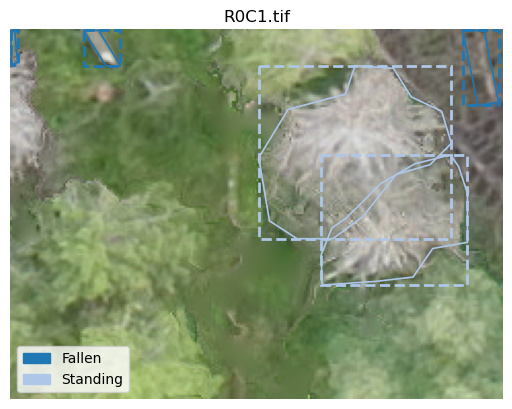
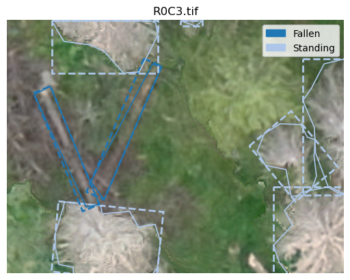

# hide
from nbdev.showdoc import *Plotting
Utilities for plotting various things
Plotting object detection datasets
COCO
plot_coco_instance
plot_coco_instance (coco_data:dict, image_id:int, image_dir:pathlib.Path, ax:matplotlib.axes._axes.Axes, plot_bbox:bool=True, plot_segmentation:bool=True, show_labels:bool=True, show_title:bool=True)
import jsonwith open('example_data/tiles/coco_norm.json') as f:
coco_data = json.load(f)fig, ax = plt.subplots(1,1)
plot_coco_instance(coco_data, 1, Path('example_data/tiles/images/'), ax, plot_bbox=True)
plt.show()
Also works with oriented bounding boxes
with open('example_data/tiles/coco_rot.json') as f:
coco_rot_data = json.load(f)
fig, ax = plt.subplots(1,1)
plot_coco_instance(coco_rot_data, 3, Path('example_data/tiles/images/'), ax, plot_bbox=True)
plt.show()
YOLO
plot_yolo_instance
plot_yolo_instance (annotation_fname:pathlib.Path, image_fname:pathlib.Path, ax:matplotlib.axes._axes.Axes, ann_type:str='box', show_title:bool=True, classes:list[str]=None)
Plot yolo format instance to ax and return it. If classes are provided show them in legend
fig, ax = plt.subplots(1,1)
classes = ['standing', 'fallen']
plot_yolo_instance(Path('example_data/tiles/labels/R0C3.txt'), Path('example_data/tiles/images/R0C3.tif'), ax, ann_type='polygon',
classes=classes)